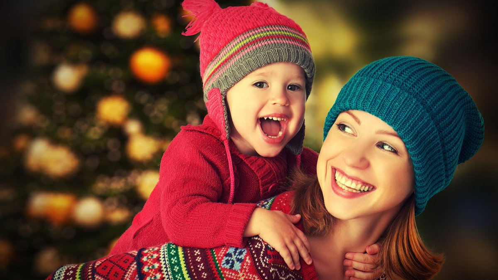

Сімейна новорічна фотосесія: секрети вдалих знімків

Ми активно готуємося до свят - стільки всього потрібно встигнути і підготувати, купити, продумати, прикрасити, приготувати. Часу на сімейну новорічну фотосесію зовсім немає. Навіщо її робити, запитаєте? На телефон пофоткаємо. Але ж це зовсім не те. В гарних світлинах професійного фотографа відображено все - як змінились Ви та Ваша родина за рік, як ростуть діти. Фото з телефону їх ніяк не замінять. Тому давайте разом сплануємо і підготуємось до сімейної новорічної фотосесії. А підказки, як це зробити, Ви знайдете в статті.
Для чого потрібна сімейна новорічна фотосесія?
Перш за все для того, щоб запам’ятати, як змінилася сім’я за минулий рік. Ще вчорашні малюки сьогодні впевнено розбирають ялинку або позують разом з мамою і татом. Наші батьки поряд з нами – це важливо. Традиція робити сімейну новорічну фотосесію щороку дозволить розповісти історію Вашої родини не тільки дітям, але й онукам.
Новорічна сімейна фотосесія – це подвійне свято. Першого разу у Вас буде святковий настрій під час самої зйомки, а другого разу – під час перегляду фото.
Новорічні сімейні фото – найкраща листівка для вітання рідних та близьких. Особливо тих, хто живе далеко. Можете просто надрукувати фото, а можна перетворити його в дизайнерських програмах: зробити колаж, додати напис і тоді вже друкувати. І все – Ваша саморобна листівка готова!
Як підготуватися до сімейної новорічної фотосесії?
Визначтеся з фотографом. Для Вас фотосесія – приємний святковий привід зібратися всією родиною, а для фотографа – його щоденна робота. Обирайте передусім по результатах – фотографіях. Але на відгуки та особисту розмову теж зверніть увагу. Сподобалась людина – домовляйтесь.
Виберіть місце для проведення сімейної новорічної фотосесії. Варіантів безліч: це може бути і Ваш прикрашений до свята дім, і засніжений парк з ялинками поблизу, і фотостудія.
Оберіть день зйомки. Нехай це буде субота або неділя, коли не потрібно нікуди бігти і поспішати. Радимо призначати першу половину дня, коли всі сповнені сил та енергії. Найпростіше вдома – прикрасили ялинку і вже можете запрошувати фотографа.
 А ось з вуличною зйомкою складніше – потрібен сніг, невеликий мороз і сонце. З фотостудіями складність інша – перед Новим Роком там гаряча пора і все може бути зайнято. Розкриємо невеличкий секрет – дні між Новим Роком та Різдвом також вдалі для сімейної новорічної фотосесії – у всіх святковий настрій, а в студіях ажіотажу вже нема.
А ось з вуличною зйомкою складніше – потрібен сніг, невеликий мороз і сонце. З фотостудіями складність інша – перед Новим Роком там гаряча пора і все може бути зайнято. Розкриємо невеличкий секрет – дні між Новим Роком та Різдвом також вдалі для сімейної новорічної фотосесії – у всіх святковий настрій, а в студіях ажіотажу вже нема.
Оберемо одяг для сімейної новорічної фотосесії. Діє загальне правило – якщо фотосесія сімейна, то бажано дотриматись єдиного стилю для всієї родини. Для фотосесії тривалістю в одну годину досить двох образів. Перше вбрання – святкове та урочисте. Підберіть для себе вишукане плаття або костюм, чоловік може одягнути святкову сорочку. Дітям підберіть одяг, схожий на Ваш – на фото це виглядає дуже гарно, ніби мамина та татова копія поруч.
Дуже стильно виглядають сім’ї, вдягнені в одній кольоровій гаммі (мамине плаття одного кольору з татовою сорочкою, як і одяг у дітей). Друге вбрання – домашнє, джинсове. Це можуть бути сорочки в клітинку та джинси, а може у всіх будуть футболки одного кольору з новорічними побажаннями або сімейним гаслом.
 Класно виглядають в’язані речі – светри з новорічною символікою – оленями, сніжинками. Якщо вийде знайти (купити, зв’язати) однакові светри для всіх членів сім’ї вийдуть взагалі круті фото. Сміливо використовуйте аксесуари – прикольні ковпаки, обручі, метелики, смішні оленячі ріжки – все підійде. Про карнавальні костюми – хоче дитина одягнути костюм собачки, пінгвіна або феї – нехай одягне. Ви отримаєте сімейні новорічні фото з щасливою посмішкою дитини, а що може бути краще?